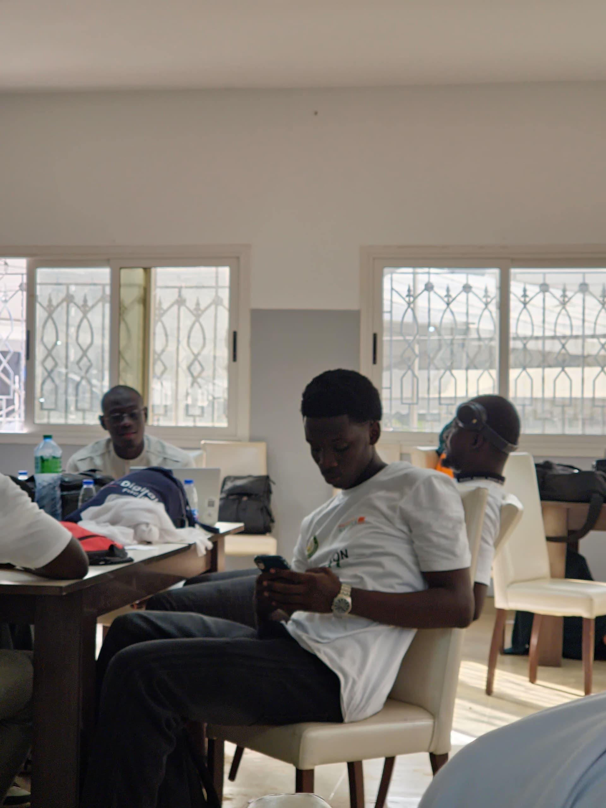
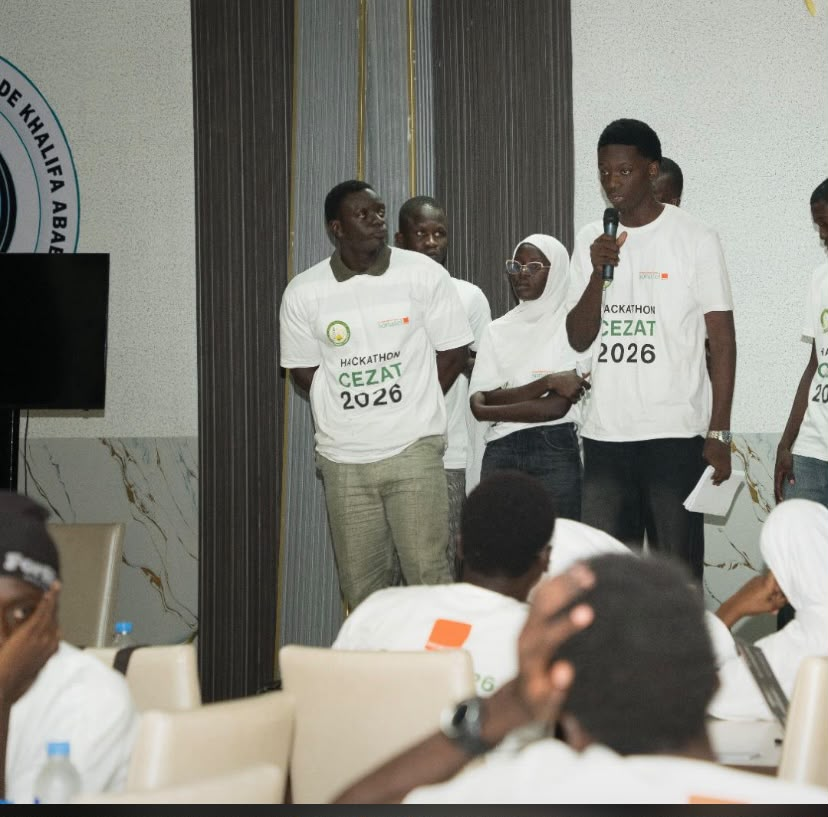
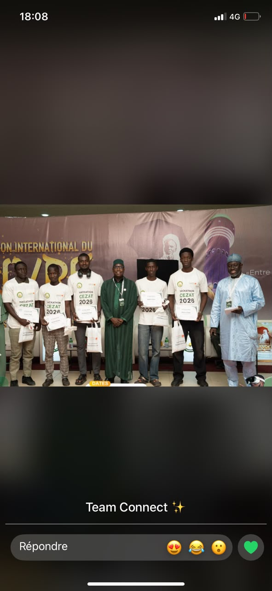
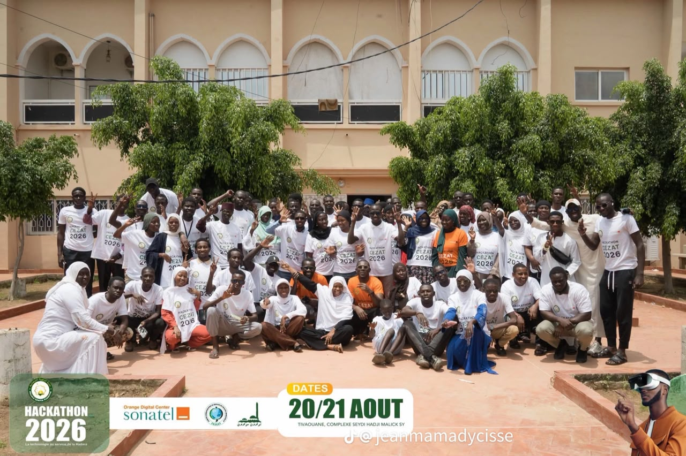
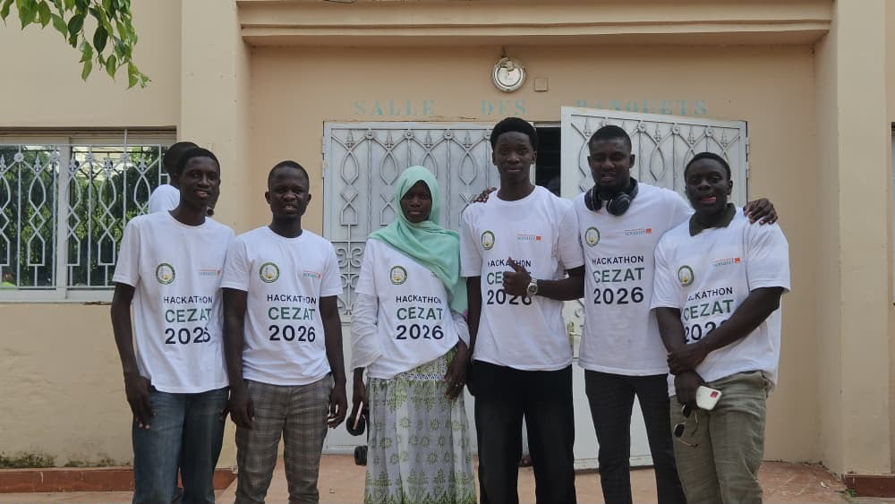
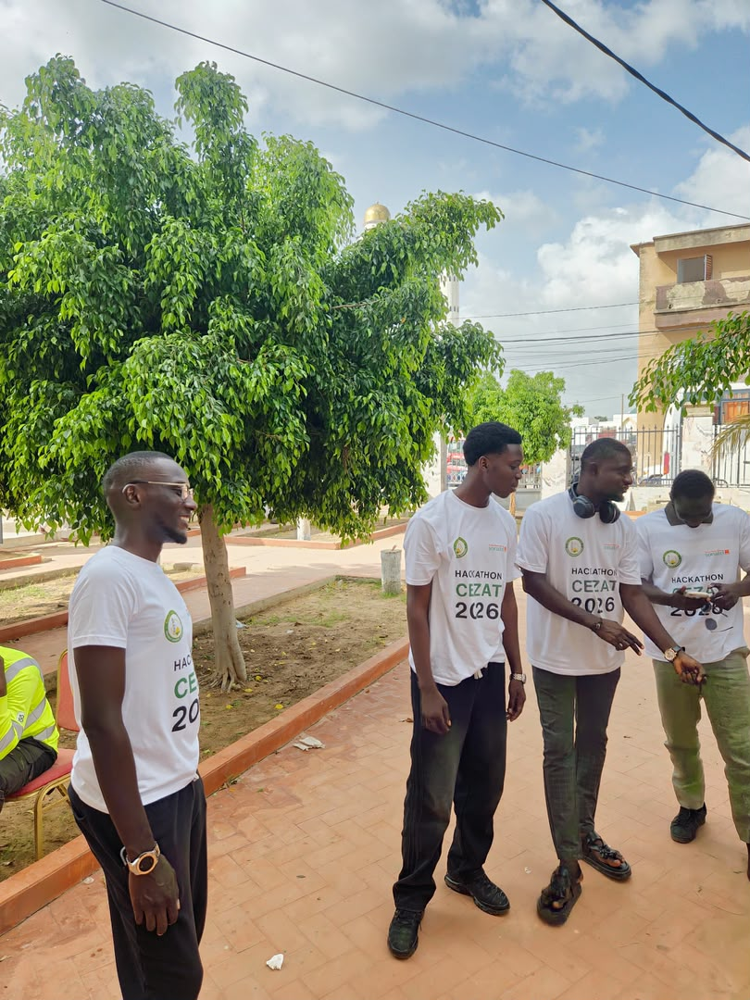
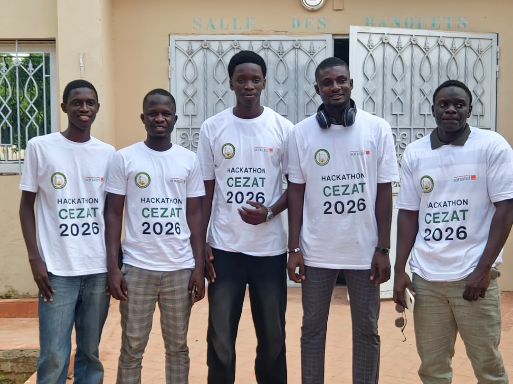
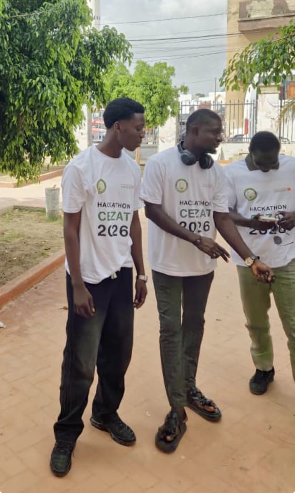

Ma façon d'apprendre
Je comprends mieux en construisant : un cours devient un projet, une erreur devient une leçon.
> bonjour_
Étudiant en Licence 3 Informatique | Passionné par les technologies
À l'UFR STA de l'Université Ahmadou Makhtar Mbow, j'apprends en construisant : applications web, analyse de données, réseaux et objets connectés. J'aime partir d'un problème concret pour en faire une solution qui fonctionne.

Je ne me contente pas de suivre les cours : chaque notion devient un projet, un prototype ou un montage que je peux montrer.
Je comprends mieux en construisant : un cours devient un projet, une erreur devient une leçon.
Développement logiciel, science des données, réseaux informatiques et Internet des objets.
Partir d'un besoin réel, livrer une première version utile, puis l'améliorer.
Classées par domaine. Les niveaux indiquent mon rapport à chaque outil, pas une certification.
Un aperçu de mes réalisations. Le détail (problème, solution, rôle) est sur la page dédiée.

Plateforme web pour centraliser la gestion des étudiants, enseignants, salles, groupes et emplois du temps.

Système à base d'ESP32 qui mesure des données environnementales, les affiche sur un écran LCD et les rend consultables à distance.

Analyse de données et modèle de Machine Learning : nettoyage, visualisation, modélisation et résultats.

Conception et configuration de réseaux locaux : adressage IP, communication entre équipements, tests avec ping.
Une formation progressive, qui m'a fait toucher à plusieurs domaines de l'informatique.
UFR Sciences et Technologies (UFR STA) — Université Ahmadou Makhtar Mbow (UAM), Diamniadio, Sénégal
Spécialisation en informatique et réalisation de projets.
En plus de ma licence, je continue d'apprendre en suivant des formations en ligne.
Orange Digital Center (programme Tech-Ki) · Dakar · 30 août 2026
Club Orange Digital Center, Université Amadou Mahtar Mbow de Diamniadio · 2025
Mes projets sont mes expériences concrètes : ils m'ont appris à analyser un besoin, choisir des outils, livrer et présenter.
Applications web, bases de données, réseaux et data science réalisés dans le cadre de ma licence.
Développements menés par curiosité pour explorer de nouveaux outils et approfondir mes compétences.
Prototypage avec ESP32 et capteurs : de la mesure à l'affichage, jusqu'au suivi à distance.
Du nettoyage des données à la modélisation, avec la bibliothèque Python adaptée à chaque étape.
Simulation de réseaux locaux et vérification de la communication entre équipements.
Conception rapide d'une solution en équipe, puis présentation du projet.
Travail en équipe, résolution de problèmes et présentation d'une solution en temps limité.

Tivaouane
DahiraConnect, une plateforme de gestion des dahiras.








Je cherche à mettre mes compétences en pratique au sein d'équipes qui m'apporteront autant que je leur apporterai : motivation, rigueur et envie de progresser.
Une proposition de stage, une collaboration ou une question ? Écrivez-moi.